3 分鐘學會
用 pun 旅行分帳
旅途中誰付了什麼都記在 pun，回國後 App 會算出「最少幾筆轉帳」就能把帳算清楚，大家付完按一下就結清。pun 是網頁 App，加到手機主畫面就能用。
所有人都要做開團的人做一次
0開始使用
pun 是網頁 App，不用到 App Store 下載，加到主畫面就能像 App 一樣用。
所有人
把 pun 加到主畫面
- iPhone：用 Safari 打開 pun → 下方的分享按鈕 ⬆︎ → 加入主畫面 → 新增。
- Android：用 Chrome 打開 pun → 右上角 ⋮ → 加到主畫面（或 安裝應用程式）。
之後都從主畫面的 pun 圖示打開。全螢幕、離線也能記帳，這份使用說明也能離線看。
從 LINE 點開的連結沒辦法直接加到主畫面：先按右上角的選單，改用 Safari（Android 用 Chrome）開啟，再照上面做。
所有人
用 Google 登入
- 從主畫面打開 pun。
- 按 Google 登入按鈕，選你的 Google 帳號。
iPhone 主畫面的 pun 請用 Google 登入。email 登入連結會在 Safari 打開，登入狀態帶不回主畫面的 pun。
換手機或改用電腦時，用同一個帳號登入，旅程都會自動同步回來。
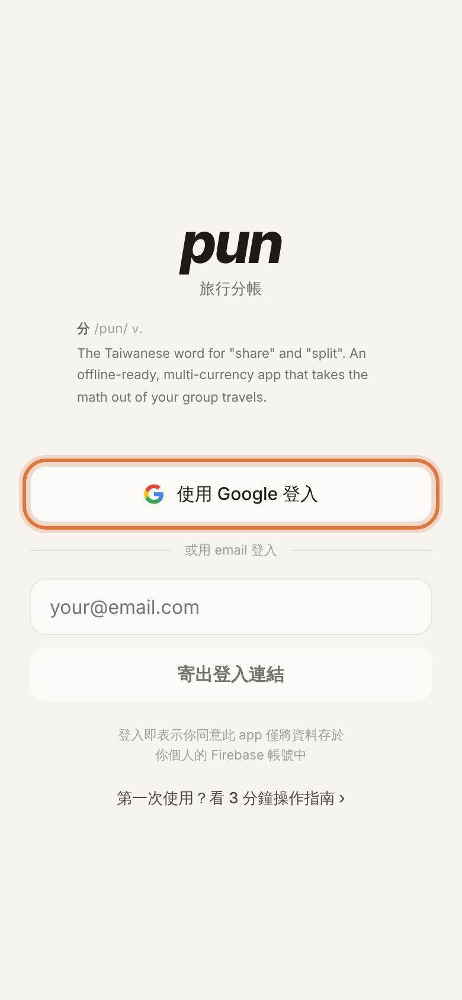
1出發前
建好旅程、拉旅伴進來、每個人認領自己。
開團的人
建立旅程
- 首頁右上角按 ＋。
- 填旅程名稱、日期，選 主幣（最後結算用的幣別，例如 TWD）。
- 輸入你的名字和旅伴的名字 → 建立。
漏了人沒關係，之後在旅程的 成員 頁還能加。
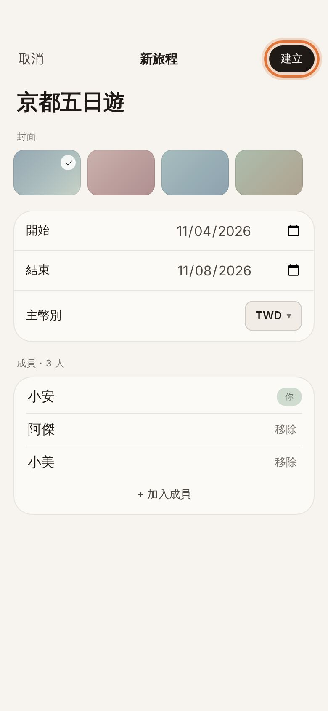
開團的人
邀請旅伴
- 進入旅程，按右上角 ⋯ → 邀請旅伴。
- 按 分享連結… 傳到 LINE 群組。訊息裡會一起附上 6 碼 邀請碼 和加入方式。
加入的人都可以一起記帳、修改，資料會即時同步。
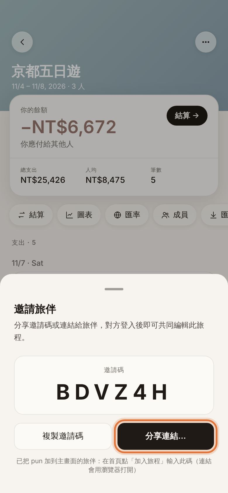
旅伴
加入旅程（用邀請碼）
- 從主畫面打開 pun。
- 首頁右上角的 加入旅程 圖示（人像 ＋）→ 輸入 6 碼邀請碼 → 加入旅程。
為什麼不直接點連結？手機上的連結會用瀏覽器打開，不會打開主畫面的 pun；在 LINE 裡點開也沒辦法用 Google 登入。還沒安裝的人可以先點連結（在 LINE 裡要先改用 Safari／Chrome 開啟），登入後就會自動加入，之後再把 pun 加到主畫面。
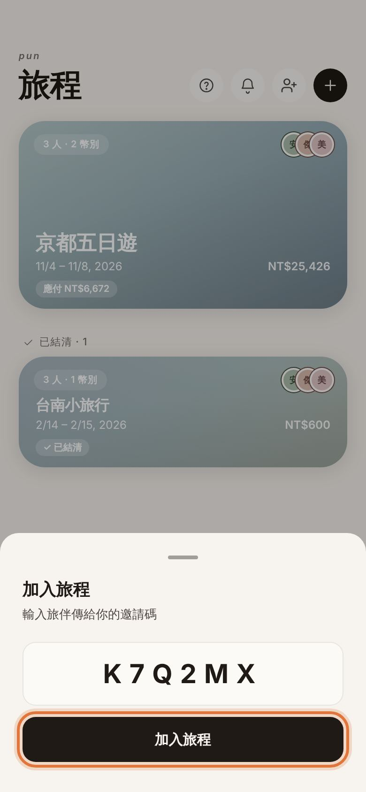
所有人
認領自己：按「這是我」
- 進入旅程 → 成員。
- 在自己的名字旁按 這是我。
很重要：沒有認領的話，「你的餘額」不會是你自己的帳。請在主畫面的 pun 裡設定；換手機、或改用瀏覽器開 pun，要再設定一次。
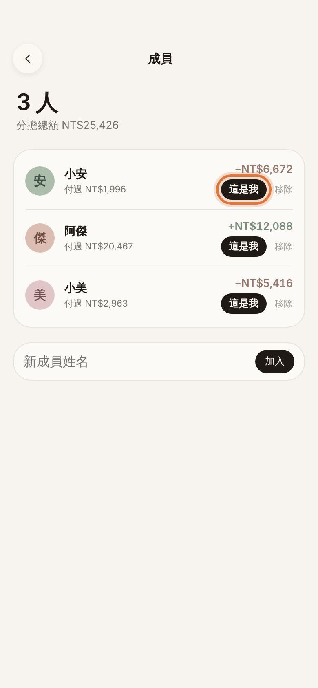
開團的人
設定外幣與匯率
- 旅程頁 → 匯率 → 在「加入幣別」選要用的外幣（例如 JPY）。
- 選 即時匯率 自動抓網路匯率；或選 手動匯率，輸入你實際換匯的匯率。
每筆支出用當地幣別記就好，結算時會自動換算成主幣。
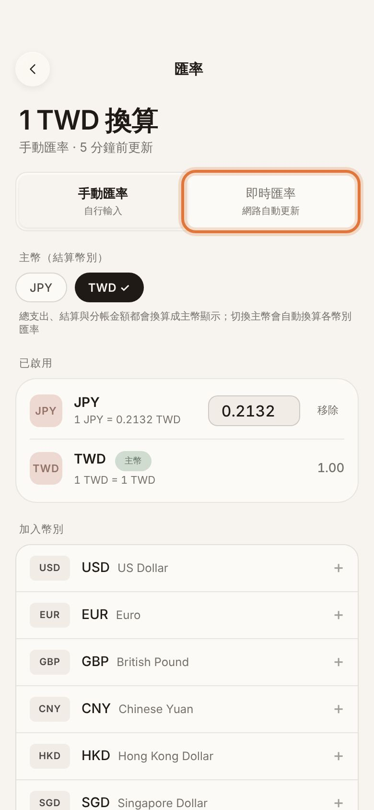
2旅途中
誰付錢誰記，花 10 秒記一筆。
所有人
記一筆支出
- 旅程頁右下角按 ＋。
- 填名稱、金額、幣別、分類。
- 選 付款人；兩個人以上一起付，按 +多人 分別填金額。
- 選 分帳方式 → 儲存。
| 均分 | 參與的人平均分。沒參加的人把勾勾取消就好。 |
|---|---|
| 金額 | 直接指定每個人分多少錢。 |
| 等份 | 依份數分，例如大人 2 份、小孩 1 份。 |
| 比例 | 依百分比分，例如 70% / 30%。 |
金額欄旁有計算機，可以直接輸入 1200+850 這類算式。
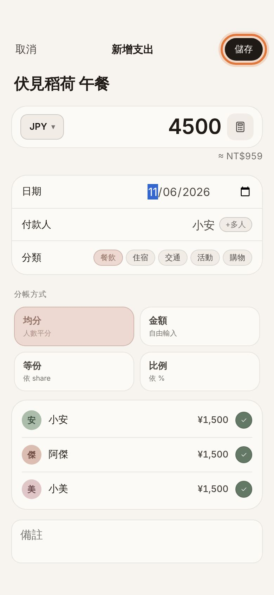
所有人
看自己的餘額
- 旅程頁上方的 你的餘額：綠色 ＋ 是別人欠你，紅色 － 是你欠別人。
- 下方列表是所有支出，點一筆可以修改或刪除。
- 首頁的 🔔 會告訴你旅伴新增或修改了什麼。
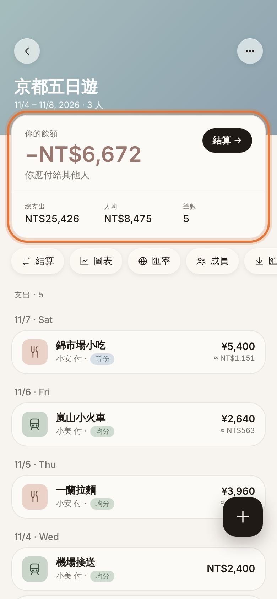
需要時
借錢給旅伴
旅途中借現金、幫忙墊付不算旅費的東西：旅程頁 結算 → 借款紀錄 記錄借款。借款會一起算進最後的結算。
3回國後：結清
照著轉帳付款，最後按一下「結清這趟旅程」。
所有人
看誰要付給誰
- 旅程頁按 結算。
- App 會算出最少筆數的轉帳，例如「小美 應付給 阿傑 NT$1,234」。
- 照著用轉帳、LINE Pay 或現金付款。
有人想先付一部分？在那筆轉帳下方按 先付一部分？記錄還款，填實際付的金額，剩下的會自動重算。
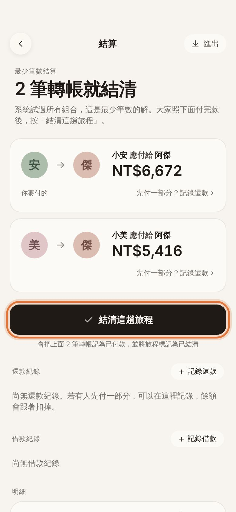
任何一人
結清這趟旅程
- 確認大家都付完款。
- 在結算畫面按 結清這趟旅程 → 確認。
剩下的轉帳會記為已付款，旅程標記為 已結清，並移到首頁下方的「已結清」區塊。
結清後匯率會鎖定，不會再自動更新，已結清的帳不會因為匯率變動又冒出差額。按錯了可以按 取消結清 復原。
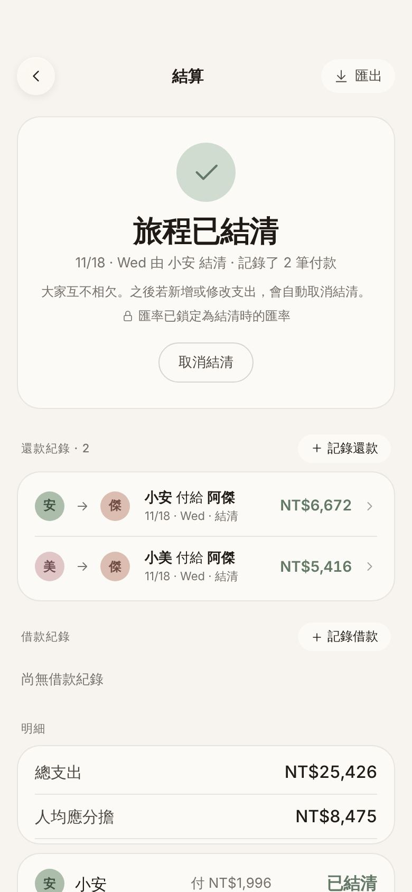
需要時
匯出帳單
旅程頁 匯出：
- 個人帳單 PDF：每個人自己的明細、分擔與付款。
- 複製文字：貼到 LINE 群組給大家看。
- CSV：用 Excel／Numbers 打開。
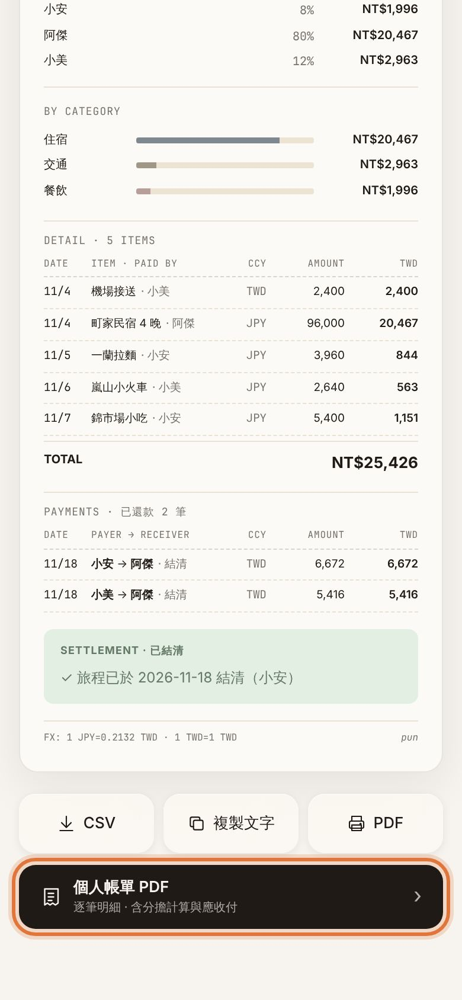
所有人
已結清的旅程
結清後的旅程會收進首頁下方的 已結清 區塊，卡片上標示 ✓ 已結清，進行中的旅程留在上面。
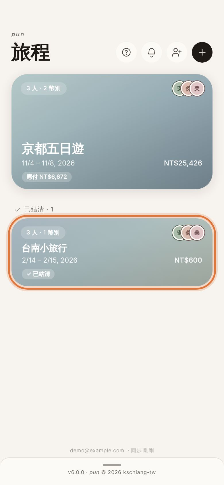
?常見問題
結清後才發現漏記一筆，怎麼辦？
直接新增或修改就好。旅程會自動取消結清、重新計算要付多少，補付之後再按一次 結清這趟旅程。
為什麼匯率不能改了？
旅程結清後，匯率會鎖定在結清當下的值，避免匯率變動讓已結清的帳又出現差額。真的要改，先到結算畫面按 取消結清。
外幣支出怎麼換算？
每筆支出用它自己的幣別記，結算時依 匯率 頁的匯率換算成主幣。主幣也可以在匯率頁切換。
「借款」和「還款」有什麼不同？
借款是旅途中把錢借給旅伴，對方會欠你更多；還款是結算時付掉欠款，欠的錢會變少。
「這是我」選錯人了？
到 成員 頁，在你真正的名字旁按 這是我，就會直接換過來。
為什麼幾毛錢的零頭不見了？
台幣、日圓這類沒有小數的幣別，小於 0.5 元的零頭會直接算已結清，不用為了幾毛錢再轉一次帳。
沒有網路也能記帳嗎？
可以。從主畫面打開的 pun 離線時照常記，連上網路後會自動同步給旅伴；這份使用說明離線也能看。
點了邀請連結，卻打開瀏覽器而不是主畫面的 pun？
手機的連結沒辦法直接打開主畫面上的網頁 App。請從主畫面打開 pun，在首頁右上角 加入旅程 輸入邀請碼（分享訊息裡就有）。如果已經在瀏覽器加入了也沒關係：在主畫面的 pun 用同一個 Google 帳號登入，旅程就會出現。
在 LINE 裡打開 pun，Google 登入失敗？
Google 不允許在 LINE 內建的瀏覽器登入。按右上角的選單，改用 Safari／Chrome 開啟；或直接從主畫面的 pun 登入。
主畫面的 pun 怎麼更新到最新版？
連上網路打開 pun 時會自動更新。如果看起來還是舊版：點首頁最下方顯示版本號的那一列，打開 關於 → 備份資料並更新到最新版本。
旅伴看得到我其他的旅程嗎？
看不到。只有同一趟旅程的成員共用那趟的帳目；「目前旅程」置頂也只有你自己看得到。